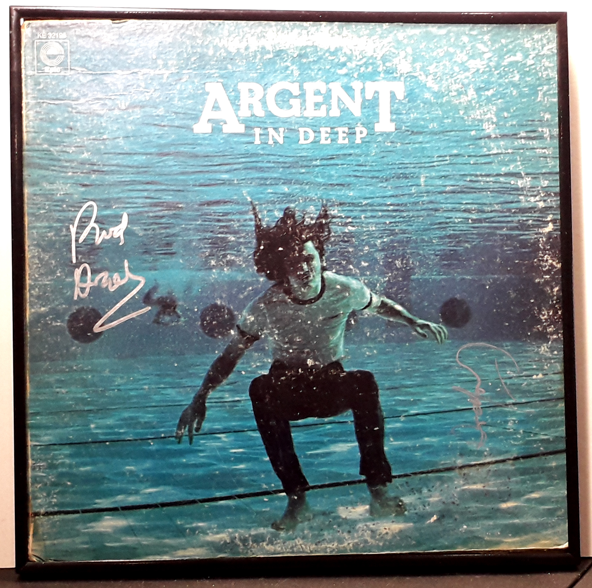

Miscellaneous
This comes framed and ready for hanging. Also included is a letter of confirmation of authenticy from the person who obtained these signatures in-person.
Product No. HEA-0326
$125
Shipping: $18.95
Description
Signed LP Album - In Deep by Argent and Rodford - In Person
Full Description
Argent was an English rock band formed in 1969 by keyboardist Rod Argent, following the breakup of his earlier group, The Zombies. The original lineup consisted of Rod Argent, guitarist and vocalist Russ Ballard, bassist Jim Rodford, and drummer Bob Henrit. The band developed a distinctive sound combining progressive rock, hard rock, strong vocal harmonies, and prominent keyboard work. Rod Argent’s Hammond organ was a major part of the group’s sound, while Russ Ballard contributed much of the songwriting and lead guitar work. Argent’s best-known song is “Hold Your Head Up,” released in 1972. The song became an international hit and remains the recording most closely associated with the band. Another important Argent song, “God Gave Rock and Roll to You,” was written by Russ Ballard and later became widely known through versions by other artists, including Kiss. The band released several albums during the 1970s, including Argent, Ring of Hands, All Together Now, In Deep, Nexus, and Circus. In Deep, released in 1973, included “God Gave Rock and Roll to You” and represented the classic Argent lineup of Rod Argent, Russ Ballard, Jim Rodford, and Bob Henrit. Russ Ballard left the group in 1974 to pursue a solo career and became a successful songwriter for other performers. Argent continued with lineup changes before breaking up in 1976. Rod Argent later reunited with Colin Blunstone and other members of The Zombies. Jim Rodford also became a longtime member of The Kinks and later performed with The Zombies. Bob Henrit likewise played with The Kinks. Argent is remembered as an important British rock group of the early 1970s, particularly for its combination of powerful keyboards, melodic songwriting, and progressive-rock influences.
Condition
Pretty good. Some seam tears on the cover.